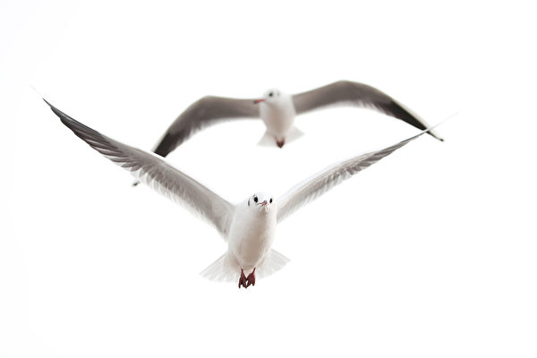

两只正在飞行的海鸥。（Fotolia） 【2024年08月07日讯】（记者季薇多伦多报导）多伦多公车局（TTC）邻近安大略湖边的一个设施，不堪海鸥侵扰，今年春天启用了驱赶海鸥的声炮。TTC在邻近安大略湖边的Leslie Barns街车维护与储存场，自3月中旬到6月底——鸟类的筑巢季节，让驱海鸥声炮发出巨大的声音，吓跑海鸥，特别是环嘴鸥（Ring-billed gull），把它们驱赶到其它地方筑巢，解决由于大量鸟粪带来的健康和安全问题。
据CBC报导，TTC发言人斯图尔特·格林（Stuart Green）表示，鸟粪漫天的情况非常严重，有些员工甚至不得不用雨伞遮挡，才能走到他们的车上。
格林说：“网状屏障让它们远离屋顶，声炮让它们无法靠近网状屏障，这确实是有效的综合措施。”
声炮的使用次数比TTC预期的少，只用了约500次，而不是预计的3,000至4,000次。
这些措施仅在春季需要，在鸟类筑巢的季节实施。专家表示，由于今年的驱赶，那些环颈鸥可能不会再次回到TTC设施的屋顶上筑巢。
与TTC合作、帮助解决海鸥问题的加拿大环境与气候变化部水鸟生物学家戴夫·摩尔（Dave Moore）说，环嘴鸥通常在整个五大湖地区的岛屿上筑巢，在城市环境中，绿色的屋顶有点像岛屿。
TTC湖边设施的绿色屋顶对它们很有吸引力。摩尔解释，首先要阻止它们在屋顶上筑巢。接下来，要用像噪音炮这样的东西吓跑它们，这很关键；因为如果它们已经筑巢，就很难把它们赶走。
他补充道，最近的一项调查显示，在自然区域筑巢的环嘴鸥数量正在减少，它们在城市中的存在却在增加，研究人员正在努力寻找答案。
TTC曾表示：“该设施及其节能屋顶，自2015年营运以来，来访的海鸥数量一直在增加，估计每年约有1万至1.5万只。”
责任编辑：岳怡